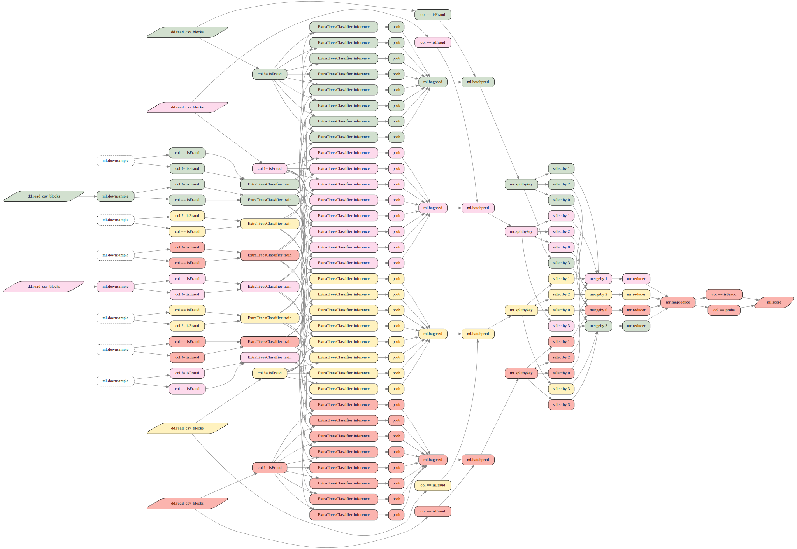
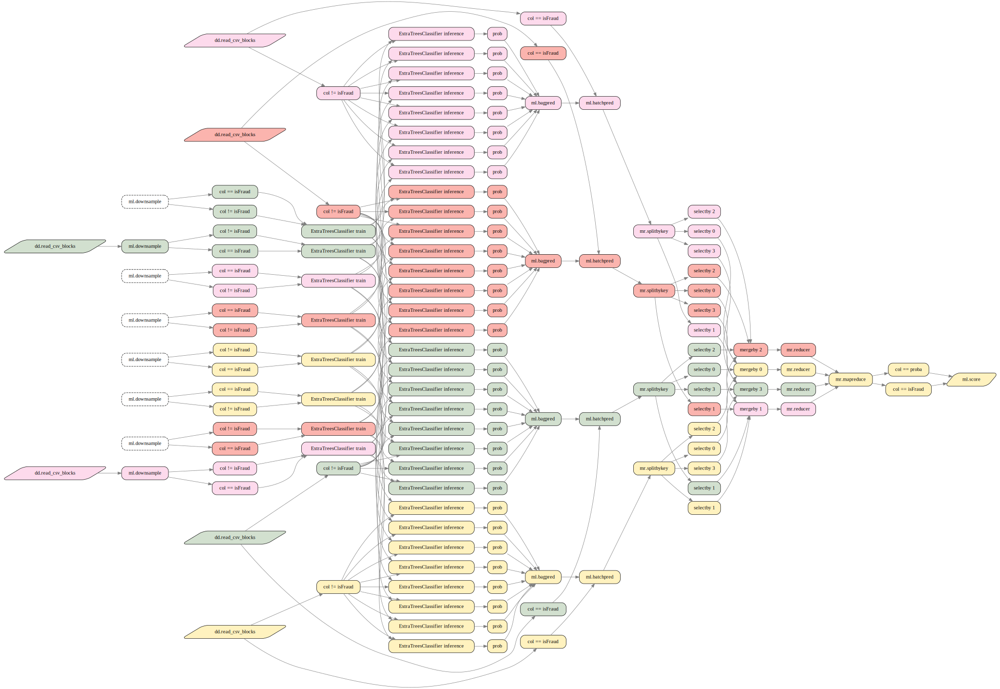

Tutorial 7: MLOps: ML Experiment Tracking and Persiting
How to use this tutorial
- Select "run all cells" on this notebook from the Run menu in Jupyter notebook or Jupyter
lab. This step will produce intermediate data output and charts.
- Some cells print out a url, which you can click on and bring up an interactive web UI to visualize the graph data.
- In the unlikely event that the notebook becomes irresponsive, you can try "Restart Kernel" from the Kernel menu, then run individual cells one by one using
Shift+Enter. - Some tutorials use local clusters consisting of multiple processes to mimic the effects
of graph distribution over a remote clusters. By default, these local clusters automatically stop after idling for 15min to conserve CPU and memory resources. You will need to rerun the entire notebook if your local cluster stopped due to inactivity.
- Additional resources (video demos & blogs) are available at http://juliustech.co
- To report any issues, get help or request features, please raise an issue at:
https://github.com/JuliusTechCo/JuliusGraph/issues
Introduction
ML model experiment tracking is a common challenge for datas scientists and engineers. Once in a while, we hear the following kind of story:
”My team spent months to train a massive ML model, we got exellent results at some point. But unfortunately we can't reproduce it any more, a number of things have changed, including data, underlying python library versions and hyperparameters, we are just not sure what combination might have worked ...".
Such story highlights the challenge in ML experment tracking, in order to reproduce a past ML run exactly, three things has to be persisted and recovered,
- runtime environment, including hadware, OS, software libraries etc
- input data
- the entire code, parameters and configurations, to be able to re-build the entire
data/analytical pipeline
Experiment tracking becomes much more challenging if the model runs on a distributed environment with many computers. To guarantee reproducibility, each ML experiment should run from a fresh environment, otherwise the data, setting or environment might change between runs. For example, some data files could be added or modified as part of the runs. However, a complete refrehs of a complex distributed data and analytical pipeline is often out of the question in pracitice, as it consists many software components, parameters and configurations. This is why most existing experiment tracking solutions only persist part of the pipeline that are most relevant for the ML models. The downside of this approach is that the stored ML runs might fail to recover the exact results.
Leveraging its distributed graph computing engine, Julius offer an experiment tracking solution that can persist and recover an entire distributed data and analytical pipeline, as well as the full runtime data and environment. We belive Julius is the only solution on the market with such capabilities.
Julius persists model experiment with its entire data & analytical pipeline in the following simple steps:
- spin up a fresh virtual distributed environment, this only takes a few seconds
- run the ML experiment and then record the entire session on the Julius server side, and
persist the recorded session onto long term storage. The recorded session contains the step by step instruction to recreate the entire runtime environment, including the entire data and distributed pipeline to recover the exact state of the experiment.
- the recorded ML experiement can be easily recovered by replaying it on another
fresh environment.
In this notebook, we follow a typical work flow of a data scientist to show Julius' experiment traking capabilities. We use a ML fraud detection model from a previous tutorial as an example. Readers are referred to the "bagging" tutorial for more details on the model itself.
Model Development & Experiment
Data scientists usually develop ML models by running experiments interactively in a Jupyter notebook. This section shows the definition and pipeline of a distributed ML model.
using GraphEngine: RuleDSL, GraphVM
using AtomExt
using DataFrames, DataScience, StatsBase, Random
newfunctions = quote
function downsample(ycol::Symbol, frac::Float64, df::DataFrame)
positive = DataFrames.filter(row -> isequal(row[ycol], true), df)
negative = DataFrames.filter(row -> isequal(row[ycol], false), df)
dspositive = positive[sample(1:nrow(positive), round(Int, frac * nrow(positive)), replace=false), :]
dsnegative = negative[sample(1:nrow(negative), round(Int, frac * nrow(negative)), replace=false), :]
merged = vcat(dspositive, dsnegative)
merged[shuffle(1:nrow(merged)), :]
end
function valcat(xs::Vector...)
agg = DataFrame()
for (k, v) in vcat(xs...)
agg = vcat(agg, v)
end
agg
end
function dfmean(dfs::DataFrame...)
df = reduce(.+, dfs)
df ./ (length(dfs))
end
end
newrules = quote
select(ref::RuleDSL.NodeRef, cols::Any; label="$(isa(cols, InvertedIndex) ? "col != $(cols.skip)" : "col == $(cols)")") =
DataScience.ApplyFn[x::DataFrame->DataFrames.select(x, cols; copycols=false)](ref...)
classifiertrain(model::Val{:ExtraTreesClassifier}, options::Dict, trainxs::RuleDSL.NodeRef, trainy::RuleDSL.NodeRef; label="$model train")=DataScience.PyTrain["sklearn.ensemble.ExtraTreesClassifier", options](trainxs..., trainy...)
classify(train_data::RuleDSL.NodeRef, target::Symbol, model::Val, options::Dict, testx::RuleDSL.NodeRef; label="$model inference")=begin
train_data_X = RuleDSL.@ref ml.select(train_data, Not(target))
train_data_y = RuleDSL.@ref ml.select(train_data, target)
trained = RuleDSL.@ref ml.classifiertrain(model, options, train_data_X, train_data_y )
DataScience.PyPredict(trained..., testx...)
end
classifyprob(train_data::RuleDSL.NodeRef, target::Symbol, model::Val, options::Dict, test_data::RuleDSL.NodeRef; label="prob")=begin
testx = RuleDSL.@ref ml.select(test_data, Not(target))
DataScience.ApplyFn[x::DataFrame->DataFrames.select(x, :proba; copycols=false)](classify(train_data, target, model, options, testx))
end
score(realized::RuleDSL.NodeRef, probs::RuleDSL.NodeRef)=DataScience.PyScore(realized..., probs...)
downsample(raw::RuleDSL.NodeRef, ycol::Symbol, frac::Float64)=DataScience.ApplyFn[Main.downsample, ycol, frac](raw...)
bagpred(test::RuleDSL.NodeRef, model::Val, options::Dict, train_batches::Vector{RuleDSL.NodeRef}, target::Symbol) =
DataScience.ApplyFn[dfmean](RuleDSL.@ref((ml.classifyprob(b, target, model, options, test) for b = train_batches))...)
batchpred(test::RuleDSL.NodeRef, model::Val, options::Dict, train_batches::Vector{RuleDSL.NodeRef}, target::Symbol) =
DataScience.ApplyFn[(ind, prob)->[hash(test) => hcat(ind, prob)]](select(test, target), bagpred(test, model, options, train_batches, target))
end;we use existing rules in ds namespace to read CSV files from a shared drive
train_data_file = joinpath(@__DIR__, "../data/train_fraud.csv")
test_data_file = joinpath(@__DIR__, "../data/test_fraud.csv")
train_data = RuleDSL.@ref ds.csvsrc(train_data_file, true; label="train data")
test_data = RuleDSL.@ref ds.csvsrc(test_data_file, true; label="test data")
target = :isFraud
model = Val(:ExtraTreesClassifier)
options = Dict(:n_estimators => 10, :min_samples_leaf => 10)
test_data_y = RuleDSL.@ref ml.select(test_data, target)
sampleratio = 0.05
train_ddf = DataScience.DDataFrame(train_data_file, blocksize="5 MB")
train_batches = train_ddf.chunks
down_batches = RuleDSL.@ref(ml.downsample(b, target, sampleratio) for b in train_batches)
test_ddf = DataScience.DDataFrame(test_data_file, blocksize="3.5 MB")
test_batches = test_ddf.chunks
mapper = RuleDSL.@ref ml.batchpred(model, options, down_batches, target)
shuffler = RuleDSL.@ref mr.shuffler(first, 3)
reducer = RuleDSL.@ref mr.reducer(vcat)mr:reducer/typeof(vcat):7555The model now runs with good results on a cluster for model development, as shown below:
using GraphEngine: RuleDSL, GraphVM
config = RuleDSL.newconfig(RuleDSL.Config(), :project => "MapReduce")
balancer = GraphVM.GlobalUnique()
my_domain = GraphVM.mydomain()
remoteport = GraphVM.drawdataport();gs0 = GraphVM.RemoteGraphProxy(my_domain => 7225)
GraphVM.rpccall(gs0, :startlocalmasterservice, remoteport, 4)
gs = GraphVM.RemoteGraphProxy(config, my_domain => remoteport, balancer, GraphVM.GenericData())
GraphVM.wait4clusterinit(gs)Dict{UInt64, Pair{Float64, GraphEngine.GraphVM.WorkerStatus}} with 4 entries:
0x0f2847bdc16ab03e => 1.64847e9=>Ready
0xcfc6b616c2a782f5 => 1.64847e9=>Ready
0x312a9f14056ee53a => 1.64847e9=>Ready
0x0821bef1b35d62f2 => 1.64847e9=>ReadyGraphVM.@remote_eval gs begin
using GraphEngine: RuleDSL, GraphVM
using AtomExt, GraphIO
using DataFrames, DataScience, StatsBase, Random
end
GraphVM.waitcheckstatus(gs, RuleDSL.getconfig(config, :project));
GraphVM.@remote_eval gs $newfunctions
GraphVM.waitcheckstatus(gs, RuleDSL.getconfig(config, :project));
GraphVM.@addrules gs ml $newrules
mrpred = RuleDSL.@ref mr.mapreduce(test_batches, mapper, shuffler, reducer, Main.valcat)
mrscore = RuleDSL.@ref ml.score(RuleDSL.@ref(ml.select(mrpred, :isFraud)), RuleDSL.@ref(ml.select(mrpred, :proba)))
alljobs, ds = RuleDSL.jobdeps(config, [mrscore], Set([:classifiertrain, :splitbykey, :reducer]));
GraphVM.waitcheckstatus(gs, RuleDSL.getconfig(config, :project));
GraphVM.initgraph!(gs)
GraphVM.dispatchjobs!(gs, alljobs, 2);using GraphIO
GraphVM.waitcheckstatus(gs, RuleDSL.getconfig(config, :project));
svg = GraphIO.postremotegraph(gs, remoteport);
GraphIO.postsvg(svg, "ml_persist_1.svg")
GraphVM.rpccall(gs, :endcluster);
Figure 1 - Original Distributed ML Pipeline.
Record a Model Experiment
Now the data scientists is happy with the results, and want to persist the experiment so that it can be reproduced later. The data scientits have made a number of choices in this ML model run, including data sources, configurations, choice of model, and hyper parameters etc. Some experiment tracking tools are based on saving notebooks, however that is not an adequate and reliable solution, as some data or variables were not captured by the code in the notebook. For example, the developer might have read data from a local file, or rely upon the state or data of a remote server. Under those circumstances, just saving the notebook is not adequate to recover the ML Run.
Julius took a different approach, instead of saving the notebook on the client side, we persist the entire state on the server side. This server side persisting process is easy and seamless. We first start a fresh virtual cluster at a new port, using the same docker image used by the development environment.
remoteport2 = GraphVM.drawdataport()
GraphVM.rpccall(gs0, :startlocalmasterservice, remoteport2, 4)
gs2 = GraphVM.RemoteGraphProxy(config, my_domain => remoteport2, balancer, GraphVM.GenericData())
GraphVM.wait4clusterinit(gs2)Dict{UInt64, Pair{Float64, GraphEngine.GraphVM.WorkerStatus}} with 4 entries:
0xfa09eaae972e0ff8 => 1.64847e9=>Ready
0xe7973ecc7248f7ac => 1.64847e9=>Ready
0x6be430dbfae2a741 => 1.64847e9=>Ready
0x42da11d8a8ce8d6b => 1.64847e9=>ReadyThe following line enables recording on this new cluster, all the subsequent actions will be recorded on the serverside.
GraphVM.rpccall(gs2, :clearrecording!)
GraphVM.rpccall(gs2, :setrecording!, true);We now re-run the same ML model on this fresh server, existing local variables can be re-used without change to recreate the same data/analytica pipeline on the server. Only a few lines of codes are needed for server side recording, as shown below:
GraphVM.@remote_eval gs2 begin
using GraphEngine: RuleDSL, GraphVM
using AtomExt, GraphIO
using DataFrames, DataScience, StatsBase, Random
end
GraphVM.waitcheckstatus(gs2, RuleDSL.getconfig(config, :project));
GraphVM.@remote_eval gs2 $newfunctions
GraphVM.waitcheckstatus(gs2, RuleDSL.getconfig(config, :project));
GraphVM.@addrules gs2 ml $newrules
GraphVM.waitcheckstatus(gs2, RuleDSL.getconfig(config, :project));
GraphVM.initgraph!(gs2)
GraphVM.dispatchjobs!(gs2, alljobs, 2);Now we can retrieve the recordeing saved on the server side for this ML run, which is an extremely compact representation of the entire run, including all the data and analytical logic to recreate the distributed pipeline. This recording can be persisted on long term storage like AWS S3. The version of docker container being used can also be persisted along with the recording. The docker container captures the exact and complete run time environment.
GraphVM.waitcheckstatus(gs2, RuleDSL.getconfig(config, :project));
records = GraphVM.rpccall(gs2, :getrecording);
# terminate the recording cluster
GraphVM.rpccall(gs2, :endcluster);Reproduce the Model Experiment
From the recording, the entire distributed pipeline can be easily recreated at a later time. To do so, we first spin up a fresh cluster using the same version of docker container, we then replay the recording on this new server. It only take a single line of code to recover the stored pipeline:
remoteport3 = GraphVM.drawdataport()
GraphVM.rpccall(gs0, :startlocalmasterservice, remoteport3, 4)
gs3 = GraphVM.RemoteGraphProxy(config, my_domain => remoteport3, balancer, GraphVM.GenericData())
GraphVM.wait4clusterinit(gs3)Dict{UInt64, Pair{Float64, GraphEngine.GraphVM.WorkerStatus}} with 4 entries:
0x8ecd021fc0b3ca34 => 1.64847e9=>Ready
0xc2c51f6128a445ee => 1.64847e9=>Ready
0x1e7096185ffb0a6f => 1.64847e9=>Ready
0xa5a331e6ee6039aa => 1.64847e9=>ReadyGraphVM.rpccall(gs3, :replayrecording, records)11Now the results are ready to be inspected:
GraphVM.waitcheckstatus(gs3, RuleDSL.getconfig(config, :project));
svg = GraphIO.postremotegraph(gs3, remoteport3);
GraphVM.rpccall(gs3, :endcluster)
GraphIO.postsvg(svg, "ml_persist_2.svg")
Figure 2 - Recreate a Distributed ML Pipeline.
This page was generated using Literate.jl.